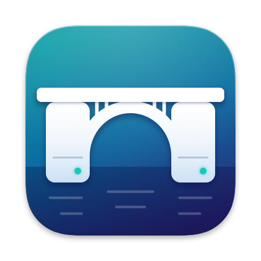

Connect a drive formatted on Linux and use it in the Finder. TuxKit mounts ext3 and ext4 read and write, ext2 and btrfs read-only. Free, no in-app purchase. No kernel extension, no administrator password, no data collected.
TuxKit was called TuxBridge Disks until version 1.0.2: same app, new name.
Requires macOS 15.6 or later.
e2fsck on Linux.macOS installs file system modules turned off: no volume mounts through TuxKit until they are turned on. You only need to do this once. The app shows the same steps and ticks each one as macOS reports it done.
Then unplug any disk that is already connected and plug it back in: macOS only offers a disk to the modules when it discovers it.
The facts below about other tools come from each publisher’s Mac App Store listing or project page, as of October 2026. They may have changed since; check each publisher’s page.
| Tool | Price | ext4 writing | btrfs | LVM | How / requirements |
|---|---|---|---|---|---|
| TuxKit | Free, no in-app purchase | Yes | Read-only | Simple linear volumes | File system module, native volume in the Finder, macOS 15.6+ |
| ExtendFS | $14.99 on the Mac App Store; free build on GitHub | No (read-only) | No | No | File system module, macOS 15.6+ |
| Ext4 Explorer | $2.99 + $3.99 in-app purchase for writing | Yes (in-app purchase) | Not stated | Not stated | File system module, macOS 26.4+ |
| xlinuxfs | $2.99 | Yes (per the publisher) | Read-write (per the publisher) | Not stated | File system module with LKL, macOS 15.4+ |
| Luksmith | $9.99 | Yes, plus LUKS encrypted volumes | No | No | Apple silicon, macOS 26+ |
| anylinuxfs | Free (GPL-3.0) | Yes | Read-write | Yes (plus mdadm, LUKS, ZFS) | Command line, runs Linux in a microVM, volumes shared over NFS, Apple silicon only |
| Paragon extFS | See publisher | See publisher | See publisher | See publisher | Kernel extension, per its Homebrew cask |
Where another tool does more than TuxKit — LUKS in Luksmith, btrfs writing and more LVM layouts in anylinuxfs — the table says so.
Yes. TuxKit is free on the Mac App Store, with no in-app purchase.
No. The file system modules are inside the app; you turn them on once in System Settings, and macOS mounts the disks itself.
TuxKit mounts a volume read-only, rather than write to it, when writing could damage it. Eject the volume in the Finder before unplugging it, as with any disk. See why a volume is read-only.
Check that the “TuxKit — ext4, btrfs” module is turned on (One-time setup), then unplug and replug the disk. More in the support page.
No. Use Linux tools (mkfs.ext4, e2fsck,
parted).
No. Neither the app nor its modules has network access. See the privacy policy.
| Name | TuxKit (TuxBridge Disks, TuxBridge in French, until version 1.0.2) |
|---|---|
| What | File system modules that let macOS mount Linux disks in the Finder: ext3 and ext4 read-write, ext2 and btrfs read-only, simple linear LVM volumes |
| Price | Free, no in-app purchase |
| Category | Utilities |
| Requires | macOS 15.6 or later |
| Privacy | No account, no network access, no data collected; sandboxed app; no kernel extension, no administrator password |
| Safety | Mounts read-only, rather than write, when writing could damage the volume; ext3/ext4 writing checked against e2fsck and the Linux kernel |
| Developer | Taciclei Souza Hortencio, independent developer |
| Link | TuxKit on the Mac App Store |
| Icon | PNG, 512 × 512 |
| Contact | taciclei@gmail.com (English or French) |
Branchez un disque formaté sous Linux et servez-vous-en dans le Finder. TuxKit monte ext3 et ext4 en lecture et en écriture, ext2 et btrfs en lecture seule. Gratuit, sans achat intégré. Sans extension noyau, sans mot de passe administrateur, aucune donnée collectée.
TuxKit s’appelait TuxBridge jusqu’à la version 1.0.2 : même app, nouveau nom.
Nécessite macOS 15.6 ou ultérieur.
e2fsck sous Linux.macOS livre les modules de systèmes de fichiers désactivés : aucun volume ne se monte par TuxKit tant qu’ils ne sont pas activés. Une seule fois suffit. L’app affiche les mêmes étapes et coche chacune dès que macOS la dit faite.
Ensuite, débranchez puis rebranchez les disques déjà branchés : macOS ne propose un disque aux modules qu’au moment où il le découvre.
Les informations sur les autres outils viennent de la fiche Mac App Store ou de la page du projet de chaque éditeur, en octobre 2026. Elles ont pu changer depuis ; vérifiez la page de chaque éditeur.
| Outil | Prix | Écriture ext4 | btrfs | LVM | Fonctionnement / prérequis |
|---|---|---|---|---|---|
| TuxKit | Gratuit, sans achat intégré | Oui | Lecture seule | Volumes linéaires simples | Module de système de fichiers, volume natif dans le Finder, macOS 15.6+ |
| ExtendFS | 14,99 $ sur le Mac App Store ; build gratuit sur GitHub | Non (lecture seule) | Non | Non | Module de système de fichiers, macOS 15.6+ |
| Ext4 Explorer | 2,99 $ + 3,99 $ d’achat intégré pour l’écriture | Oui (achat intégré) | Non indiqué | Non indiqué | Module de système de fichiers, macOS 26.4+ |
| xlinuxfs | 2,99 $ | Oui (selon l’éditeur) | Lecture-écriture (selon l’éditeur) | Non indiqué | Module de système de fichiers avec LKL, macOS 15.4+ |
| Luksmith | 9,99 $ | Oui, plus les volumes chiffrés LUKS | Non | Non | Apple silicon, macOS 26+ |
| anylinuxfs | Gratuit (GPL-3.0) | Oui | Lecture-écriture | Oui (plus mdadm, LUKS, ZFS) | Ligne de commande, Linux dans une microVM, volumes partagés en NFS, Apple silicon seulement |
| Paragon extFS | Voir l’éditeur | Voir l’éditeur | Voir l’éditeur | Voir l’éditeur | Extension noyau, d’après son cask Homebrew |
Là où un autre outil fait plus que TuxKit — LUKS chez Luksmith, écriture btrfs et davantage de dispositions LVM chez anylinuxfs — le tableau le dit.
Oui. TuxKit est gratuit sur le Mac App Store, sans achat intégré.
Non. Les modules de système de fichiers sont dans l’app ; vous les activez une fois dans Réglages Système, et macOS monte lui-même les disques.
TuxKit monte un volume en lecture seule, plutôt que d’y écrire, quand écrire pourrait l’abîmer. Éjectez le volume dans le Finder avant de le débrancher, comme pour tout disque. Voir pourquoi un volume est en lecture seule.
Vérifiez que le module « TuxKit — ext4, btrfs » est activé (Activation, une seule fois), puis débranchez et rebranchez le disque. Plus de détails sur la page d’assistance.
Non. Utilisez les outils de Linux (mkfs.ext4,
e2fsck, parted).
Non. Ni l’application ni ses modules n’ont accès au réseau. Voir la politique de confidentialité.
| Nom | TuxKit (TuxBridge jusqu’à la version 1.0.2) |
|---|---|
| Quoi | Des modules de système de fichiers qui permettent à macOS de monter les disques Linux dans le Finder : ext3 et ext4 en lecture-écriture, ext2 et btrfs en lecture seule, volumes LVM linéaires simples |
| Prix | Gratuit, sans achat intégré |
| Catégorie | Utilitaires |
| Nécessite | macOS 15.6 ou ultérieur |
| Confidentialité | Aucun compte, aucun accès réseau, aucune donnée collectée ; app en bac à sable ; sans extension noyau ni mot de passe administrateur |
| Sécurité | Monte en lecture seule, plutôt que d’écrire, quand écrire pourrait abîmer le volume ; écriture ext3/ext4 vérifiée avec e2fsck et le noyau Linux |
| Développeur | Taciclei Souza Hortencio, développeur indépendant |
| Lien | TuxKit sur le Mac App Store |
| Icône | PNG, 512 × 512 |
| Contact | taciclei@gmail.com (français ou anglais) |